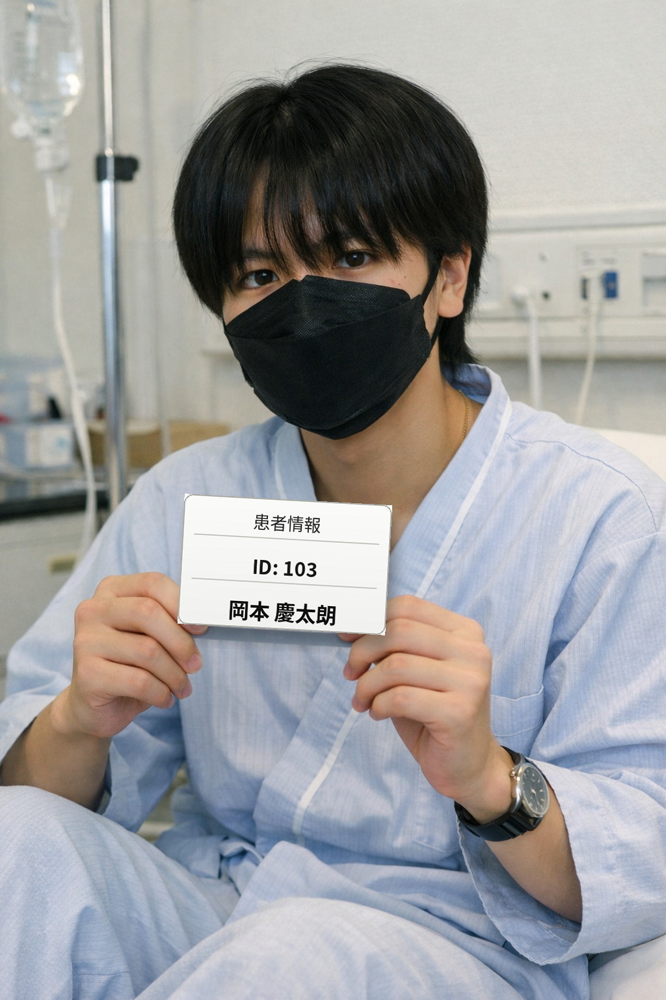

先端画像診断・ロボット手術・再生医療の各センターを核に、24診療科が連携する複合型総合病院です。 世田谷の地域医療から高度専門医療まで、ひとりの患者さまを多角的に支えます。
患者さまお一人おひとりに向き合う医療を、科学技術の力で確かなものにしたい。その思いを職員全員で共有しています。
「こんにちは、あるいはこんばんは。医療法人能登国際総合科学技術東京都心センター病院、 院長の馬奈木信嘉です。当院はこの院長である私に絶大な権力があります。 当院は世界トップレベルの医療技術、とくにミサイル技術を駆使し、これまで数々の超難病患者を救ってまいりました。 全科において世界トップレベルを誇るこの病院では、診療科24、病床数6万床、職員3万人を動員して 病院経営にあたっております。日頃からこの病院に携わってくれている奴隷たちには、深く感謝申し上げます。 ありがとうございます。これからも優先順位をしっかりと考えながら病院経営を行ってまいりますので、 権力者の皆さまには、今後とも変わらぬご支援を賜りますようお願い申し上げます。 私どもの奴隷が全力でお客様をサポートしてまいります。何卒よろしくお願い申し上げます。」
＊場合により、資力または容姿を優先して治療の順序を決定することがあります。
「総合」「科学技術」「都心」という3つの言葉に、私たちの役割を込めています。
24の診療科が院内で密に連携し、複数の疾患を抱える患者さまも一つの病院で継続的に診療します。専門科をまたぐ判断が必要な症例ほど、当院の総合力が力を発揮します。
先端画像診断センター、ロボット手術センター、再生医療センターを併設。データと臨床経験の両方に基づいた治療方針を、多職種のチームで検討します。
三次救急に対応する救命救急センターを24時間稼働。都心で働き、暮らす方々が、いざという時に迷わず頼れる病院であることを目指しています。
代表的な診療科を抜粋してご紹介します。詳しい受診案内は各科の窓口までお問い合わせください。
現時点の役職・専門科・給与体系です。体制は随時見直されます。
当院で対応した症例・業績の一例をご紹介します。

病院の基本情報です。最新の情報は各種お問い合わせ窓口にてご確認ください。
都心と住宅街の結節点に位置し、周辺地域からの通院にも配慮した立地です。